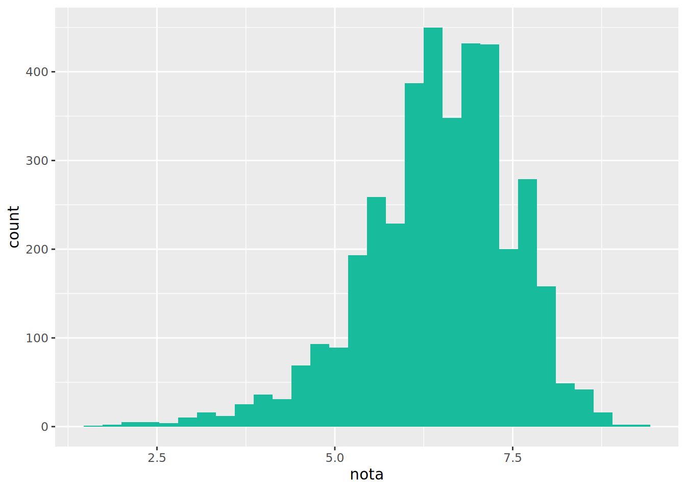
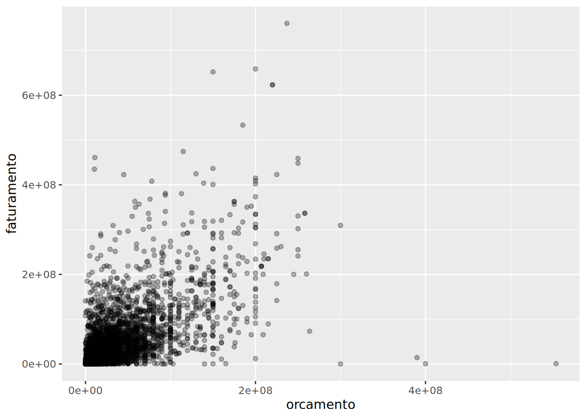
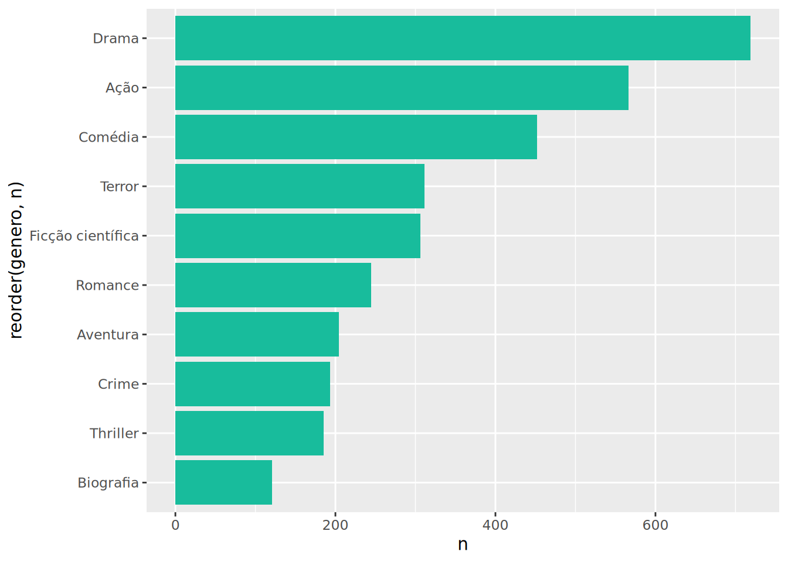
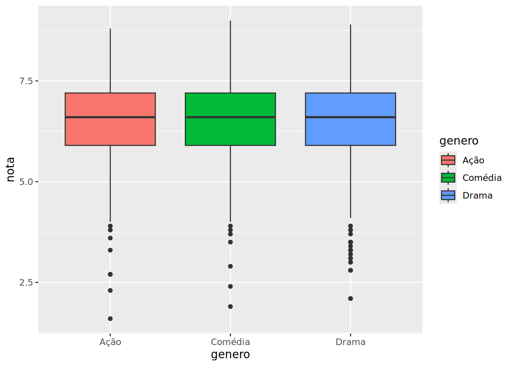

# A tibble: 2,667 × 10
codigo_filme titulo diretor ano genero duracao orcamento faturamento nota
<dbl> <chr> <chr> <dbl> <chr> <dbl> <dbl> <dbl> <dbl>
1 65 The Da… Christ… 2008 Avent… 151 185000000 533316061 9
2 329 The Lo… Peter … 2003 Coméd… 80 94000000 377019252 8.9
3 95 Incept… Christ… 2010 Ação 103 160000000 292568851 8.8
4 261 The Lo… Peter … 2001 Anima… 170 93000000 313837577 8.8
5 330 The Lo… Peter … 2002 Anima… 121 94000000 340478898 8.7
6 3398 City o… Fernan… 2002 Ficçã… 56 3300000 7563397 8.7
7 94 Inters… Christ… 2014 Roman… 90 165000000 187991439 8.6
8 2182 Spirit… Hayao … 2001 Roman… 93 19000000 10049886 8.6
9 4 The Da… Christ… 2012 Misté… 99 250000000 448130642 8.5
10 286 Django… Quenti… 2012 Coméd… 91 100000000 162804648 8.5
# ℹ 2,657 more rows
# ℹ 1 more variable: elenco_principal <chr>Manipulação de dados com dplyr
Dia 1 — Tarde | 4 horas
O pipe: %>%
Atalho: Ctrl/Cmd + Shift + M. Encadeia operações da esquerda para a direita:
Os 6 verbos do dplyr
| Verbo | O que faz |
|---|---|
filter() |
Filtra linhas |
select() |
Seleciona colunas |
mutate() |
Cria/modifica colunas |
arrange() |
Ordena |
summarise() |
Resume |
group_by() |
Agrupa |
filter()
# A tibble: 47 × 10
codigo_filme titulo diretor ano genero duracao orcamento faturamento nota
<dbl> <chr> <chr> <dbl> <chr> <dbl> <dbl> <dbl> <dbl>
1 4 The Da… Christ… 2012 Misté… 99 250000000 448130642 8.5
2 65 The Da… Christ… 2008 Avent… 151 185000000 533316061 9
3 94 Inters… Christ… 2014 Roman… 90 165000000 187991439 8.6
4 95 Incept… Christ… 2010 Ação 103 160000000 292568851 8.8
5 261 The Lo… Peter … 2001 Anima… 170 93000000 313837577 8.8
6 273 Gladia… Ridley… 2000 Drama 159 103000000 187670866 8.5
7 278 Termin… James … 1991 Terror 119 102000000 204843350 8.5
8 286 Django… Quenti… 2012 Coméd… 91 100000000 162804648 8.5
9 329 The Lo… Peter … 2003 Coméd… 80 94000000 377019252 8.9
10 330 The Lo… Peter … 2002 Anima… 121 94000000 340478898 8.7
# ℹ 37 more rows
# ℹ 1 more variable: elenco_principal <chr># A tibble: 1,018 × 10
codigo_filme titulo diretor ano genero duracao orcamento faturamento nota
<dbl> <chr> <chr> <dbl> <chr> <dbl> <dbl> <dbl> <dbl>
1 1 Avatar James … 2009 Ação 81 237000000 760505847 7.9
2 3 Spectr… Sam Me… 2015 Coméd… 88 245000000 200074175 6.8
3 17 The Av… Joss W… 2012 Ação 53 220000000 623279547 8.1
4 19 Men in… Barry … 2012 Ação 57 225000000 179020854 6.8
5 29 Jurass… Colin … 2015 Ação 58 150000000 652177271 7
6 38 Oz the… Sam Ra… 2013 Ação 95 215000000 234903076 6.4
7 39 The Am… Marc W… 2014 Ação 88 200000000 202853933 6.7
8 40 TRON: … Joseph… 2010 Ação 82 170000000 172051787 6.8
9 42 Green … Martin… 2011 Coméd… 117 200000000 116593191 5.6
10 43 Toy St… Lee Un… 2010 Coméd… 48 200000000 414984497 8.3
# ℹ 1,008 more rows
# ℹ 1 more variable: elenco_principal <chr>select() e mutate()
# A tibble: 3,875 × 3
titulo ano nota
<chr> <dbl> <dbl>
1 Avatar 2009 7.9
2 Pirates of the Caribbean: At World's End 2007 7.1
3 Spectre 2015 6.8
4 The Dark Knight Rises 2012 8.5
5 John Carter 2012 6.6
6 Spider-Man 3 2007 6.2
7 Tangled 2010 7.8
8 Avengers: Age of Ultron 2015 7.5
9 Harry Potter and the Half-Blood Prince 2009 7.5
10 Batman v Superman: Dawn of Justice 2016 6.9
# ℹ 3,865 more rows# A tibble: 5 × 2
titulo lucro_milhoes
<chr> <dbl>
1 Avatar 524.
2 Jurassic World 502.
3 Titanic 459.
4 Star Wars: Episode IV - A New Hope 450.
5 E.T. the Extra-Terrestrial 424.group_by() + summarise()
# A tibble: 19 × 3
genero nota_media n
<chr> <dbl> <int>
1 Musical 6.75 39
2 Esporte 6.73 16
3 História 6.56 31
4 Guerra 6.55 33
5 Biografia 6.50 121
6 Comédia 6.50 452
7 Ação 6.49 566
8 Drama 6.48 719
9 Romance 6.48 245
10 Documentário 6.47 117
11 Ficção científica 6.47 306
12 Fantasia 6.47 82
13 Mistério 6.46 113
14 Aventura 6.45 204
15 Thriller 6.41 185
16 Terror 6.40 311
17 Crime 6.39 193
18 Animação 6.29 114
19 Família 6.1 28count()
# A tibble: 19 × 2
genero n
<chr> <int>
1 Drama 719
2 Ação 566
3 Comédia 452
4 Terror 311
5 Ficção científica 306
6 Romance 245
7 Aventura 204
8 Crime 193
9 Thriller 185
10 Biografia 121
11 Documentário 117
12 Animação 114
13 Mistério 113
14 Fantasia 82
15 Musical 39
16 Guerra 33
17 História 31
18 Família 28
19 Esporte 16🎬 Primeiros gráficos




Exercícios
Exercício 1
Filtre filmes com nota ≥ 8.5. Quantos são?
Resultado esperado: 103 filmes.
Exercício 2
Crie lucro = faturamento - orcamento. Qual o filme mais lucrativo?
Resultado esperado: "The story of cap and trade" com lucro de 48.7 milhões.
Exercício 3
Nota média por gênero, ordenada da maior para a menor.
Resultado esperado: Documentário (6.84), Guerra (6.75), História (6.73)…
Exercício 4
Crie um histograma de duracao com 40 bins.
Resultado esperado: Pico em 90-100 min, assimétrica à direita.